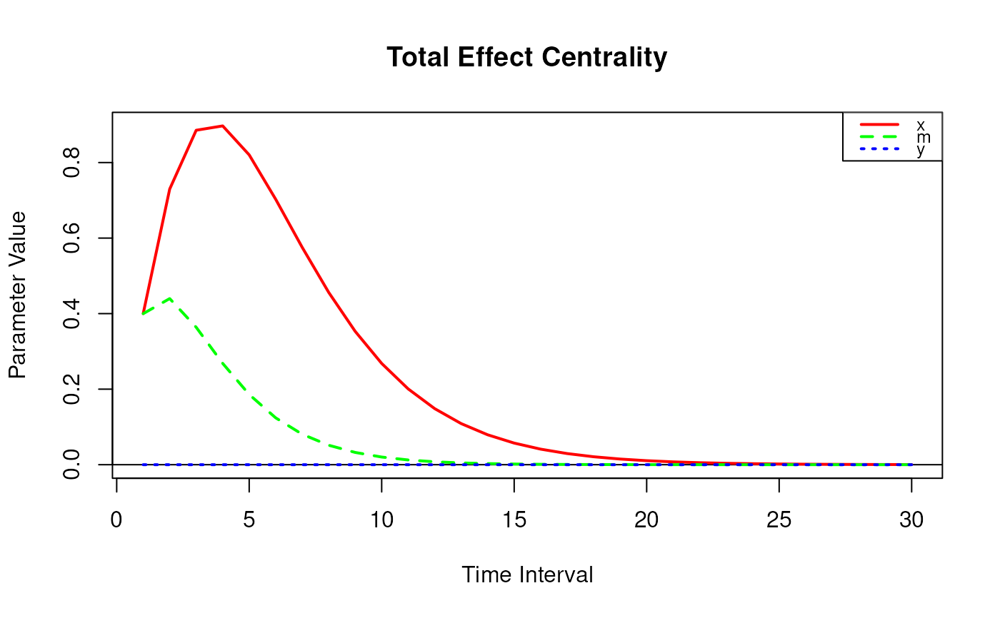
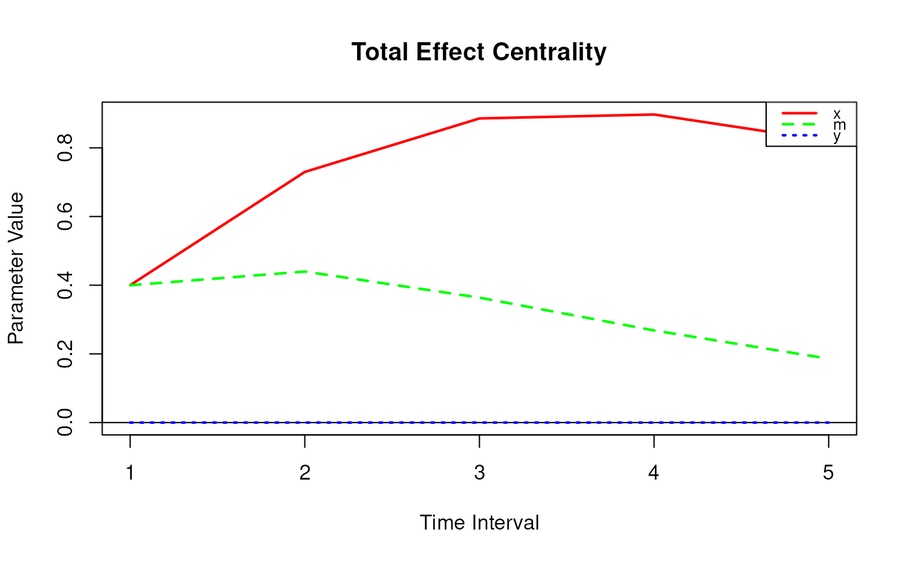

Total Effect Centrality
Value
Returns an object
of class ctmedmed which is a list with the following elements:
- call
Function call.
- args
Function arguments.
- fun
Function used ("TotalCentral").
- output
A matrix of total effect centrality.
Details
The total effect centrality of a variable is the sum of the total effects of a variable on all other variables at a particular time interval.
References
Bollen, K. A. (1987). Total, direct, and indirect effects in structural equation models. Sociological Methodology, 17, 37. doi:10.2307/271028
Deboeck, P. R., & Preacher, K. J. (2015). No need to be discrete: A method for continuous time mediation analysis. Structural Equation Modeling: A Multidisciplinary Journal, 23 (1), 61–75. doi:10.1080/10705511.2014.973960
Ryan, O., & Hamaker, E. L. (2021). Time to intervene: A continuous-time approach to network analysis and centrality. Psychometrika, 87 (1), 214–252. doi:10.1007/s11336-021-09767-0
See also
Other Continuous Time Mediation Functions:
DeltaBeta(),
DeltaBetaStd(),
DeltaIndirectCentral(),
DeltaMed(),
DeltaMedStd(),
DeltaTotalCentral(),
Direct(),
DirectStd(),
ExpCov(),
ExpMean(),
Indirect(),
IndirectCentral(),
IndirectStd(),
MCBeta(),
MCBetaStd(),
MCIndirectCentral(),
MCMed(),
MCMedStd(),
MCPhi(),
MCTotalCentral(),
Med(),
MedStd(),
PosteriorBeta(),
PosteriorIndirectCentral(),
PosteriorMed(),
PosteriorPhi(),
PosteriorTotalCentral(),
Total(),
TotalStd(),
Trajectory()
Examples
phi <- matrix(
data = c(
-0.357, 0.771, -0.450,
0.0, -0.511, 0.729,
0, 0, -0.693
),
nrow = 3
)
colnames(phi) <- rownames(phi) <- c("x", "m", "y")
# Specific time interval ----------------------------------------------------
TotalCentral(
phi = phi,
delta_t = 1
)
#>
#> Total Effect Centrality
#>
#> interval x m y
#> [1,] 1 0.4 0.3998 0
# Range of time intervals ---------------------------------------------------
total_central <- TotalCentral(
phi = phi,
delta_t = 1:30
)
plot(total_central)

# Methods -------------------------------------------------------------------
# TotalCentral has a number of methods including
# print, summary, and plot
total_central <- TotalCentral(
phi = phi,
delta_t = 1:5
)
print(total_central)
#>
#> Total Effect Centrality
#>
#> interval x m y
#> [1,] 1 0.4000 0.3998 0
#> [2,] 2 0.7298 0.4398 0
#> [3,] 3 0.8855 0.3638 0
#> [4,] 4 0.8970 0.2683 0
#> [5,] 5 0.8204 0.1859 0
summary(total_central)
#> interval x m y
#> [1,] 1 0.4000 0.3998 0
#> [2,] 2 0.7298 0.4398 0
#> [3,] 3 0.8855 0.3638 0
#> [4,] 4 0.8970 0.2683 0
#> [5,] 5 0.8204 0.1859 0
plot(total_central)
